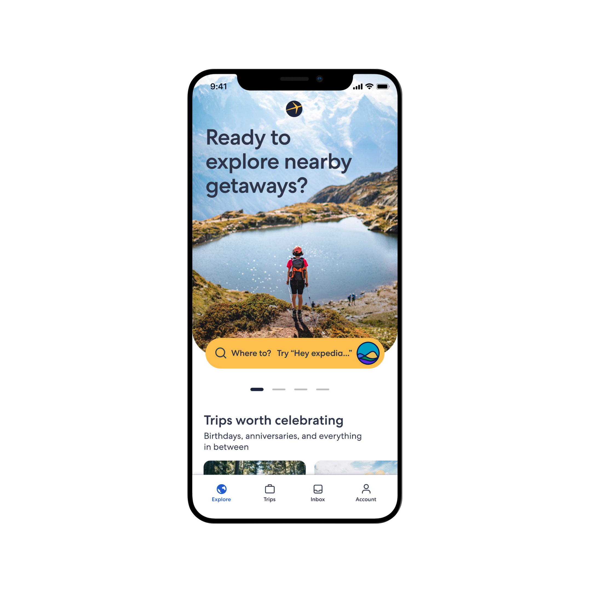
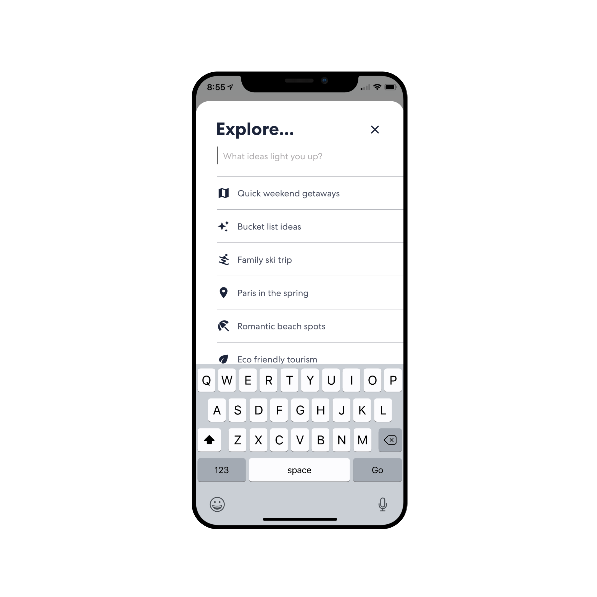
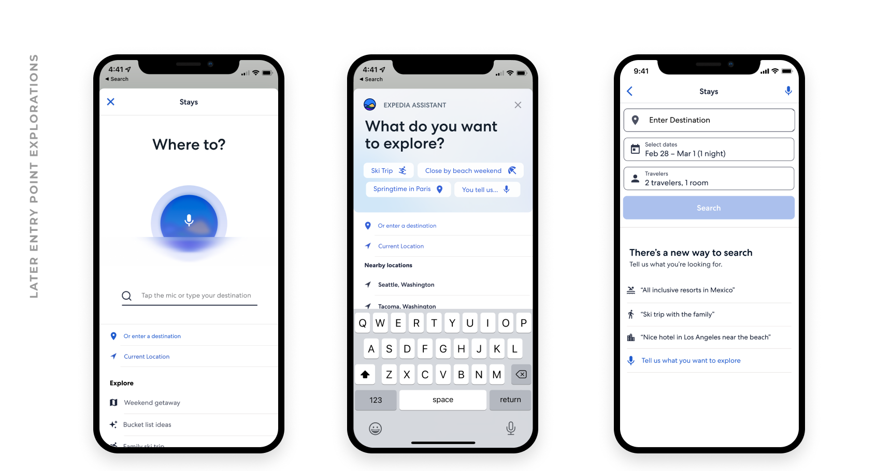
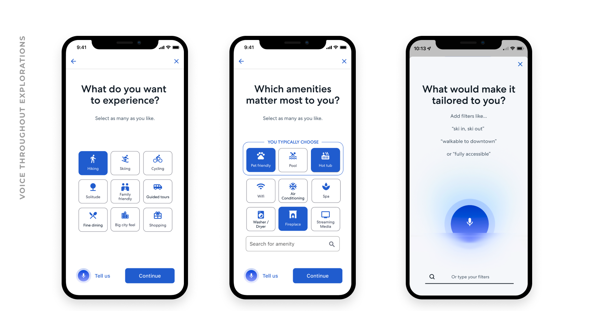
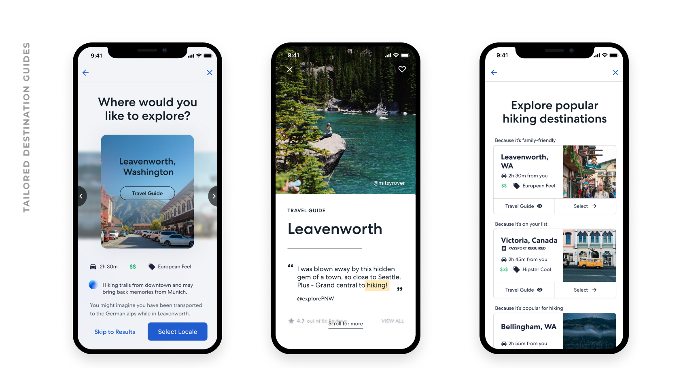
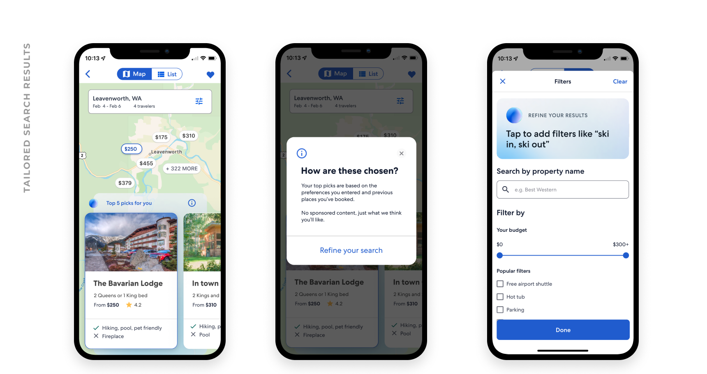
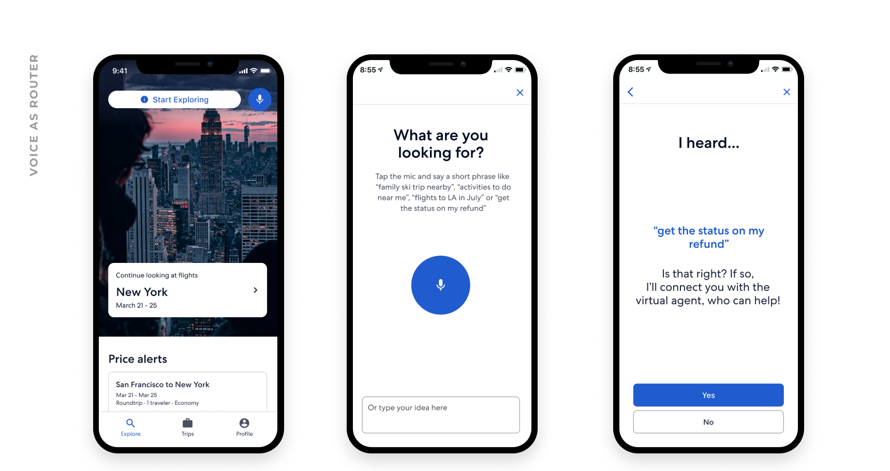

Overview
In 2021, we began exploring what AI-powered search could mean for travel—months before ChatGPT made conversational AI mainstream. The goal: reimagine how travelers discover and plan trips through natural language and personalized recommendations.

Approach
We ran a dual-track methodology—discovery research alongside rapid prototyping. The team explored voice interactions, visual search, and AI-driven personalization simultaneously to identify which approaches resonated most with travelers.


Voice Interactions
We designed conversational search experiences that let travelers describe their ideal trip in natural language. The AI would respond with curated recommendations, learning preferences over time.

Tailored Discovery
Personalized travel guides that adapted to each traveler's preferences, past trips, and browsing behavior. The system surfaced hidden gems alongside popular destinations.

Dark Mode
A fully realized dark mode experience that went beyond simple color inversion. We crafted depth through careful use of elevation, transparency, and subtle gradients to maintain readability and visual hierarchy.
Outcome
What started as exploratory research became the foundation for Expedia's current AI-powered features. The patterns, components, and interaction models we established in 2021 are now integrated across the platform.